「以前都這樣做」
先問環境、需求與證據是否已經改變。
Adam Grant / Think Again
第 1～7 章重點整理，為讀書會重新排成可瀏覽、可討論、可複習的網頁閱讀方式。
《逆思維 Think Again》
第 1～7 章重點整理
| 章節 | 核心主題 | 最重要的一句話 |
|---|---|---|
| 第1章 | 科學家模式 | 不要捍衛答案；把答案當假設，用證據持續驗證。 |
| 第2章 | 自信的謙遜 | 相信自己有能力，但不要假設自己已知道全部。 |
| 第3章 | 接受錯誤 | 被證明錯不是丟臉，而是獲得一個更新認知的機會。 |
| 第4章 | 建設性衝突 | 好團隊不是沒爭論，而是能對事爭論、對人保持尊重。 |
| 第5章 | 有效說服 | 少而有力、先找共同點，比堆滿理由更有說服力。 |
| 第6章 | 打破偏見 | 把「二分法」改成「多元光譜」，看見群體內部差異。 |
| 第7章 | 傾聽促改變 | 不要急著替對方找理由；讓對方自己說出改變理由。 |
建議不要把這七章當成七套技巧，而要把它們看成一條連續的能力路徑：先降低「我一定是對的」的執著，再建立檢驗、修正與傾聽的習慣，最後才能真正提升個人判斷、團隊決策與溝通品質。
CHAPTER 1
我們面對不同意見時，常會不自覺進入三種角色：傳教士想捍衛信念、檢察官想證明別人錯、政治人物想爭取認同。這三種模式的共同問題，是把「保護原本立場」放在「找出更好的答案」之前。作者主張採取科學家模式：把自己的看法視為暫時的假設，主動尋找支持與反對的證據，再依結果修正。
「以前都這樣做」
先問環境、需求與證據是否已經改變。
找支持自己的資料
同時主動找反證與失敗案例。
把意見當結論
把意見改成可被驗證的暫時假設。
這章真正要改變的不是「你相信什麼」，而是「你如何形成信念」。當一個人習慣把答案當成可更新的版本，就比較不會因為被挑戰而產生防衛，也更容易快速修正方向。
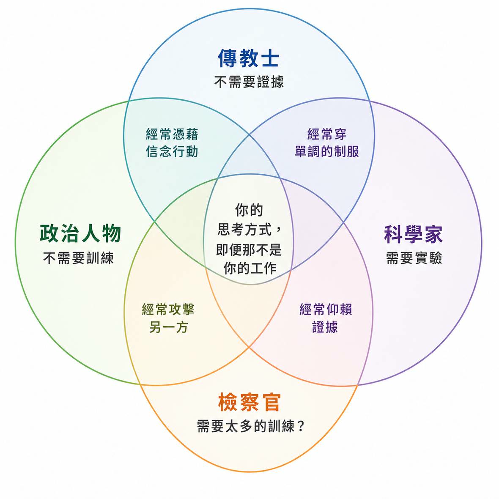
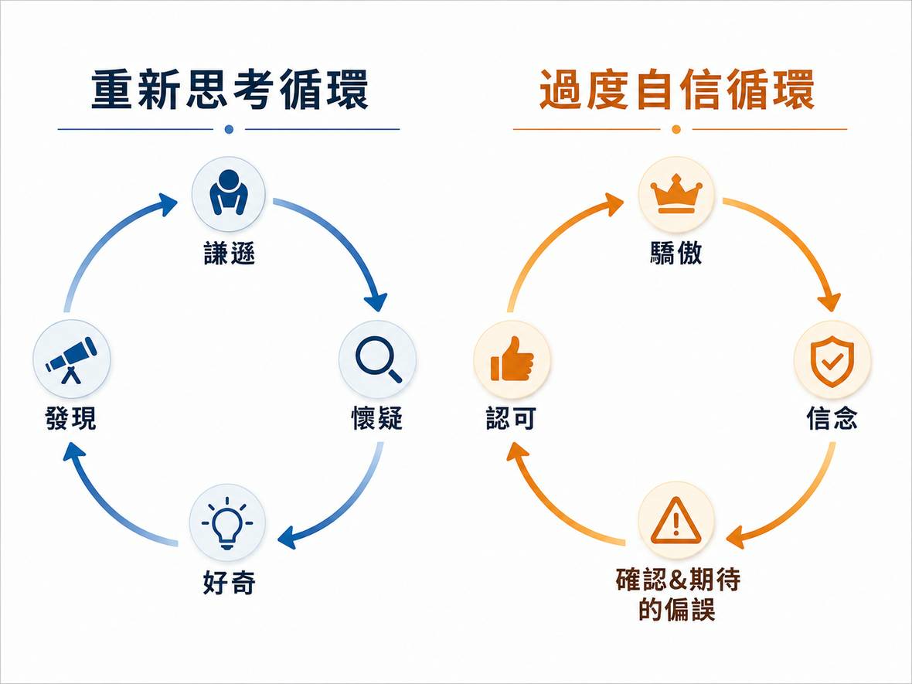
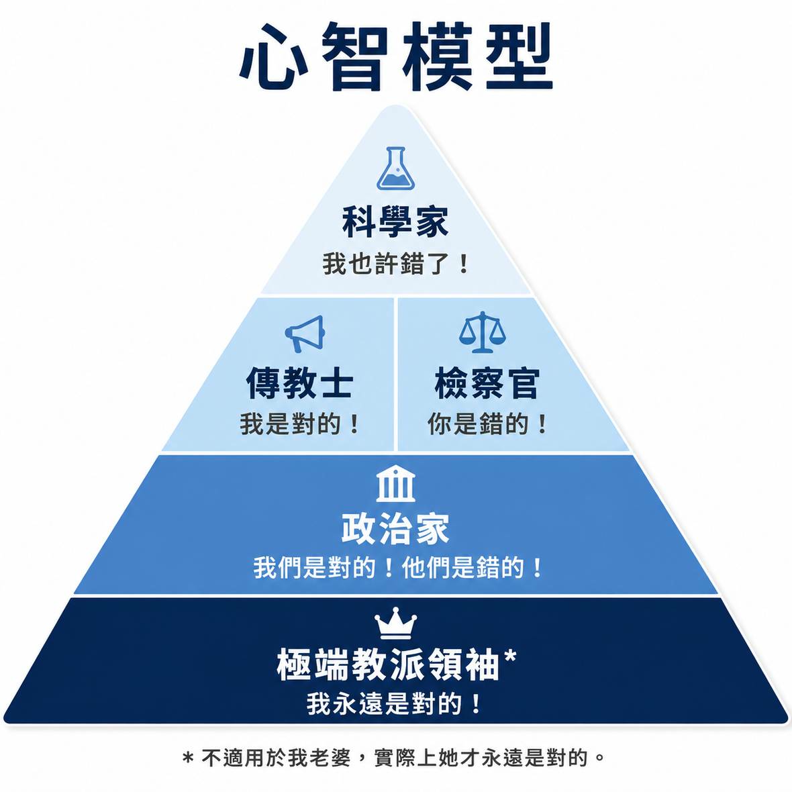
CHAPTER 2
人常把「有自信」與「有能力」畫上等號，但兩者其實可能脫鉤。能力不足時，反而可能因看不見自己的不足而過度自信；真正有經驗的人，往往更知道問題的複雜與未知。作者提出「自信的謙遜」：對自己的學習能力、執行能力有信心，但對目前的答案保留懷疑與修正空間。
過度自信
我知道答案，所以不需要再問。
缺乏自信
我可能不行，所以不敢嘗試。
自信的謙遜
我做得到，但我會持續檢查答案。
自信的重點應放在「能力可以學習與改善」，而不是「我的第一次判斷一定正確」。這樣即使被別人指出錯誤，也不會等同於能力被否定，反而能把修正視為專業的一部分。
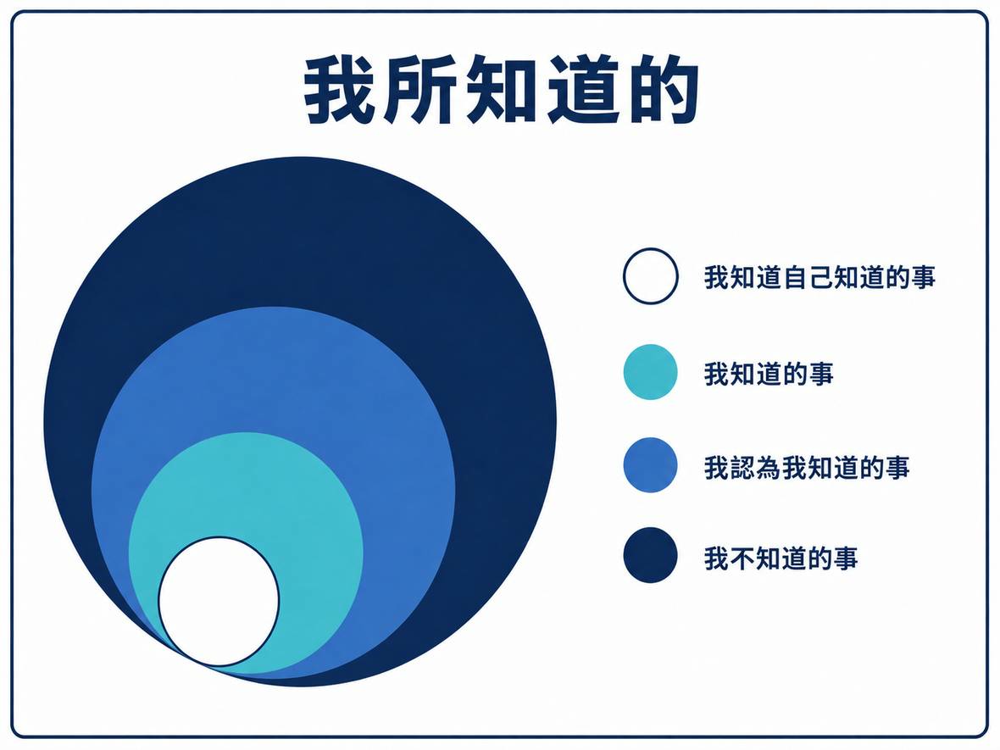
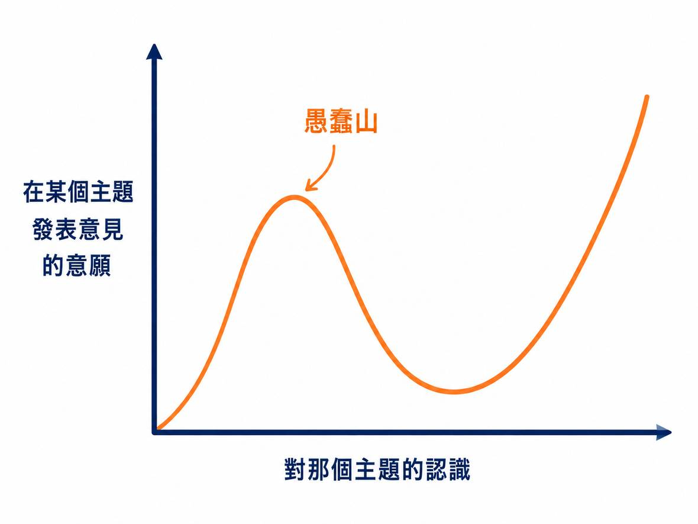
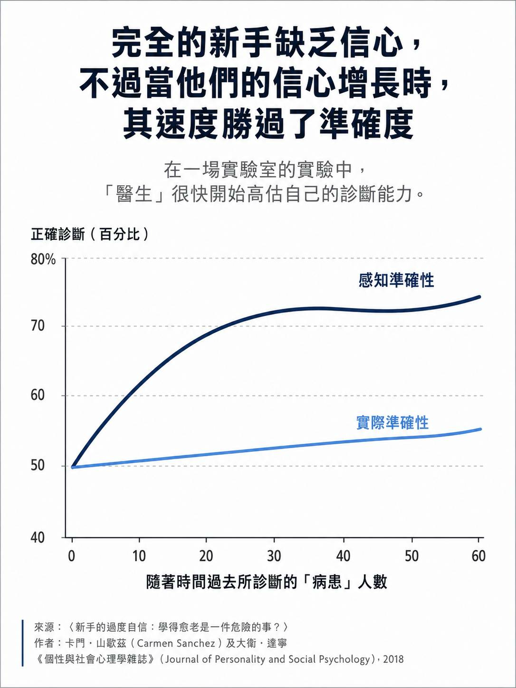
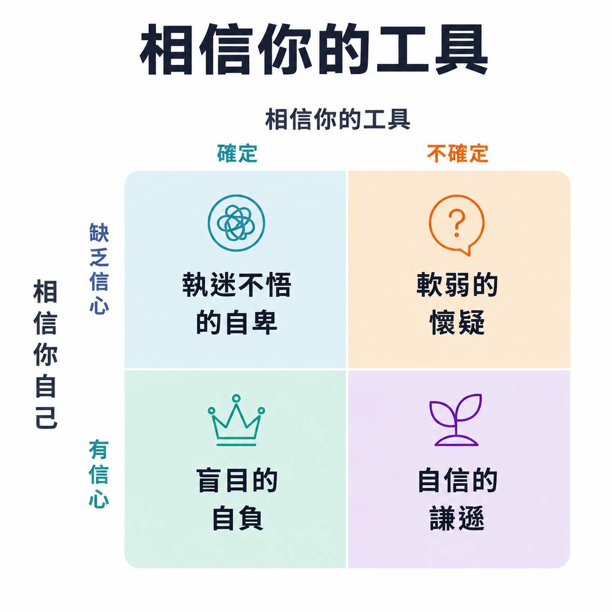
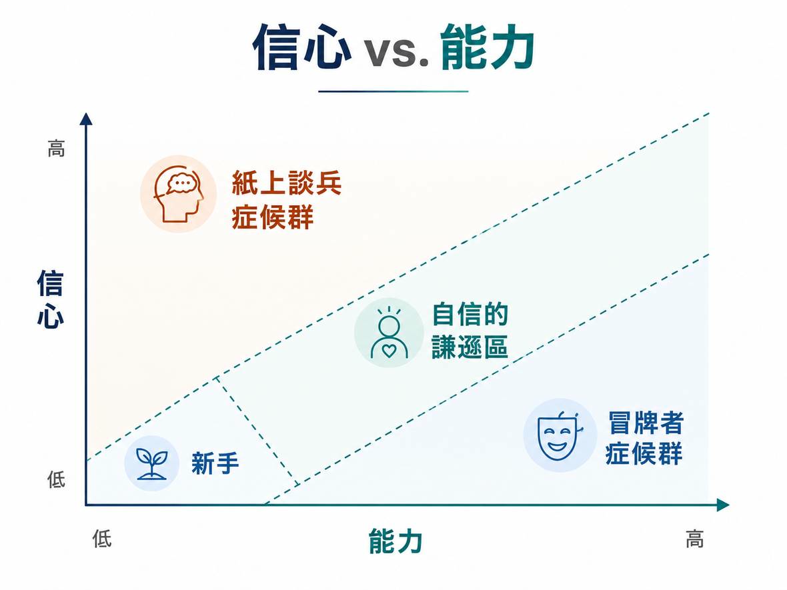
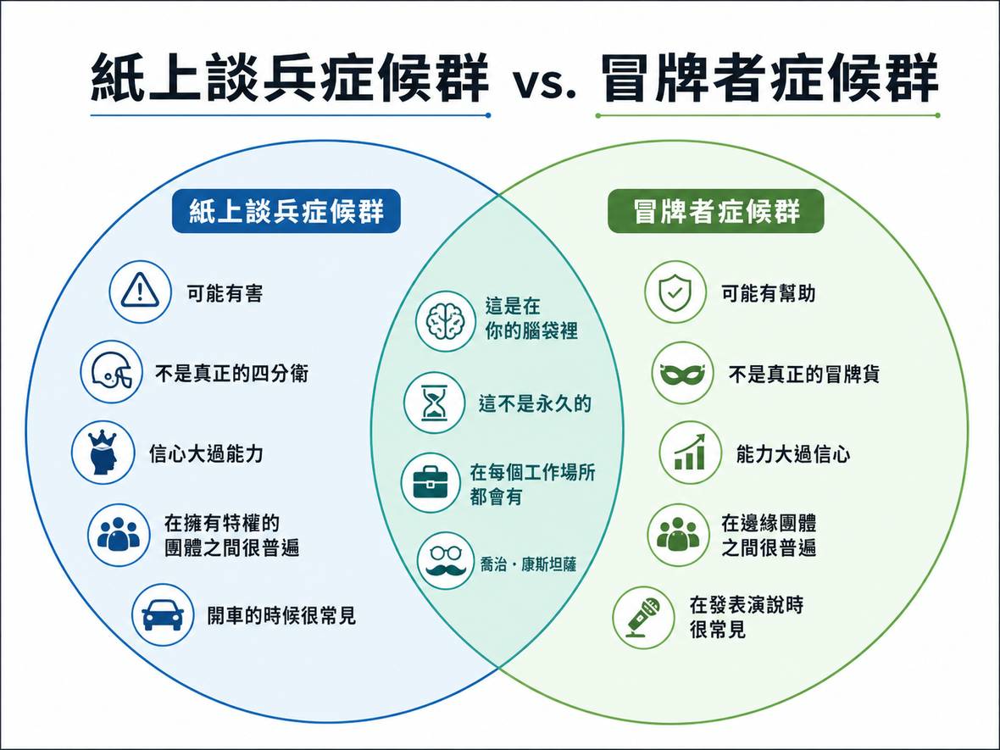
CHAPTER 3
承認錯誤之所以困難，常不是因為證據不足，而是我們把「我的觀點」與「我的身分」綁得太緊。當別人指出觀點錯誤，就像在否定整個人。作者鼓勵把自我價值建立在「願意學習與更新」上，而不是建立在「我永遠是對的」上。如此一來，被證明錯誤就不只是挫敗，也是一個把舊認知升級成新認知的機會。
「我就是這樣想的人」
改成「我目前根據這些證據這樣想」。
改變意見＝丟臉
改變意見＝取得更多資訊後更新。
只記成功的判斷
也記下預測失準與原因。
這章要培養的是「與昨天的自己脫鉤」的能力。你不需要永遠忠於過去的答案，只需要忠於更好的證據與更重要的價值。這會讓人比較容易公開承認「我改變看法了」。

CHAPTER 4
「大家都沒有意見」不一定代表團隊高度共識，也可能只是沒有人願意冒險挑戰。作者區分關係衝突與任務衝突：前者針對人格、動機與情緒，容易破壞信任；後者聚焦資料、方法與決策，若在有心理安全感的關係中進行，反而能提早暴露問題、修正盲點，讓團隊得到更好的答案。
「你根本不懂」
「這個假設有什麼資料支持？」
「大家都同意就好」
刻意安排反方角色與風險檢查。
反對＝不配合
反對可能是重要的品質控制。
挑戰者不等於唱反調的人。真正有價值的挑戰，是能指出問題、提出理由，甚至提供替代方案。團隊的目標不是增加爭吵，而是讓關鍵分歧在決策之前浮現，而不是等失敗後才被看見。
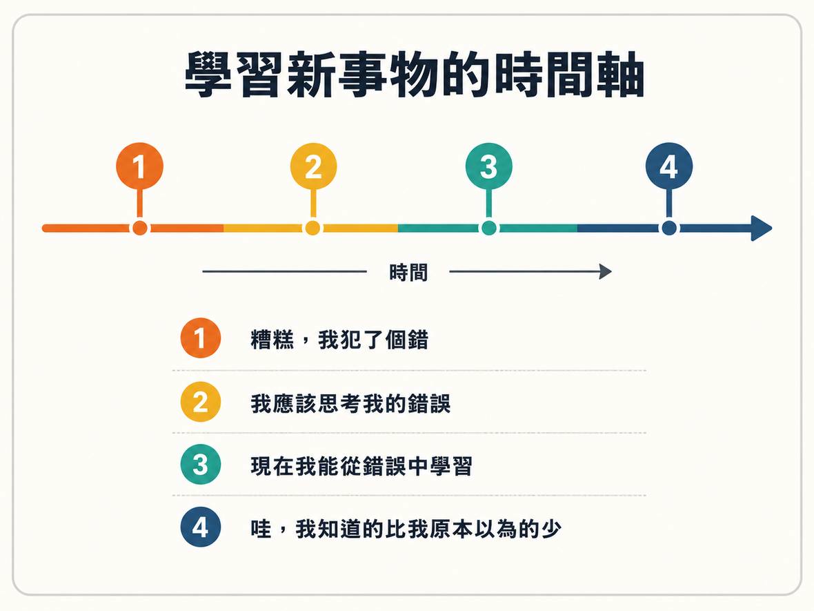
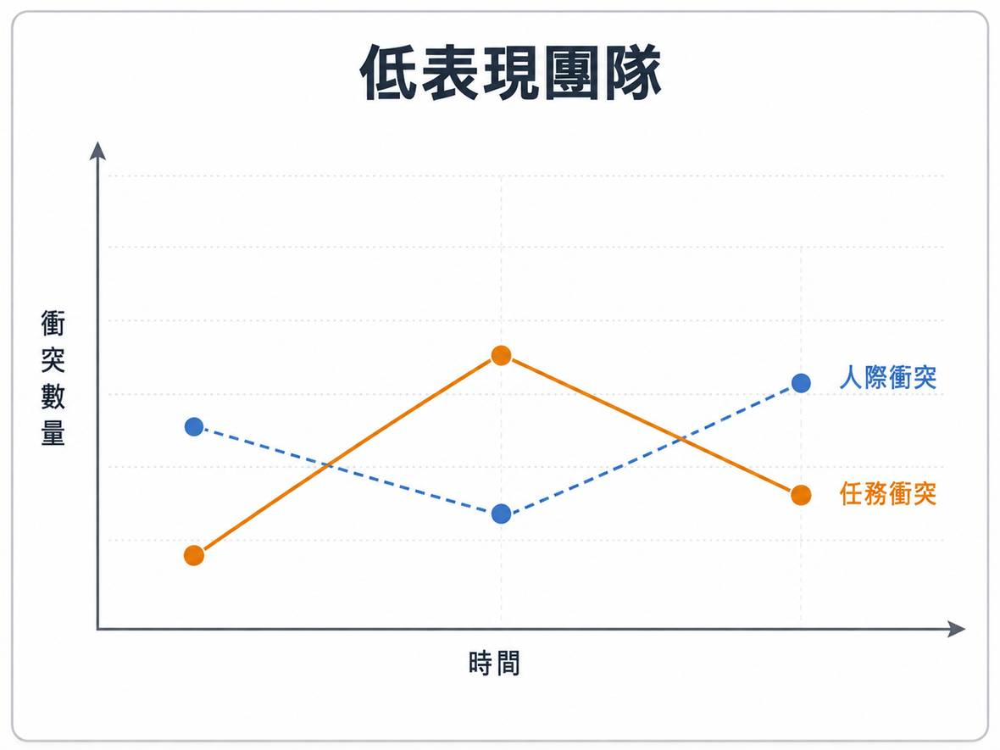
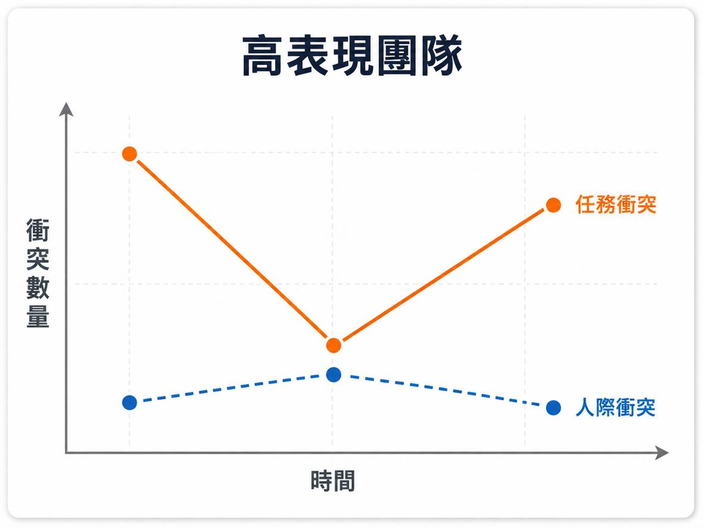
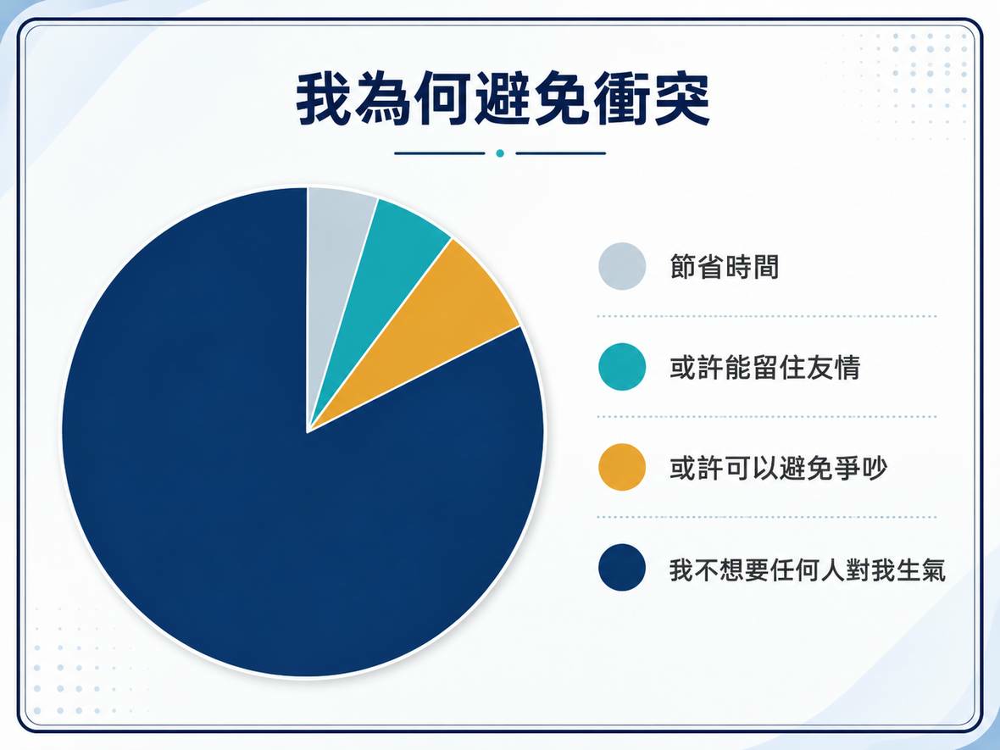
CHAPTER 5
遇到立場不同的人，我們很容易把對話變成辯論比賽：丟出大量理由，試圖壓倒對方。但理由越多並不代表越有說服力，其中只要有一個薄弱點，就可能成為對方反擊整套論點的入口。有效說服更像合作：先了解對方最在意什麼、找出共同目標，再提出少數最有力的理由，並對不確定處保持誠實。
一次塞很多理由
挑兩三個最強、最相關的理由。
先反駁對方
先找共同目標與真正分歧點。
把不確定藏起來
適度承認限制，增加可信度。
說服最容易失敗的時刻，是雙方都進入「檢察官模式」：每個人只尋找對方的漏洞。若能把問題改寫成共同探索，對方就比較可能從防衛轉向思考。
CHAPTER 6
人類大腦喜歡快速分類，因此容易把複雜的人與議題切成「我們／他們」「支持／反對」兩邊。二分法雖然省力，卻會把同一群體裡的差異抹平，形成刻板印象。作者主張用「複雜化」來重新看待對立：把單一標籤拆成不同程度、原因、情境與例外，讓我們看見同一群體並不是每個人都一樣。
「使用者都抗拒」
分辨不同抗拒原因與程度。
「支持／反對」
改用程度、條件與情境來描述。
反例只是特例
讓反例真正挑戰原本假設。
複雜化最大的價值，是讓人從「對某一群體的判斷」回到「對具體行為與需求的判斷」。一旦標籤被拆開，就比較有機會找到可以處理的問題，而不是停在情緒對立。
CHAPTER 7
當一個人抗拒某件事時，直接丟更多事實往往不會讓他改變，反而可能讓他更努力捍衛原立場。本章介紹「動機式晤談」的精神：先以好奇心聆聽，理解對方真正的顧慮，再透過開放式問題，讓對方自己探索改變的理由。當自主權被尊重，人通常比較願意重新評估自己的選擇。
我告訴你為何該改
我先了解你為何還不想改。
不停補充事實
用問題引導對方探索理由。
逼對方表態
尊重自主權，降低防衛。
傾聽不是消極，而是一種更精準的介入方式。先知道對方真正卡在哪裡，才知道資料、建議或資源應該用在哪個點上。否則再多的資訊，也可能只是回答了對方根本沒問的問題。
前七章不是單純教你「改變想法」，而是建立一套更成熟的判斷方式：先把自我與觀點分開，再讓證據、不同意見與有效傾聽進入思考流程。真正的目標，是讓個人與團隊都具備「持續更新答案」的能力。
| 章節 | 核心能力 | 轉變方向 |
|---|---|---|
| 第1章 | 把想法當假設 | 從「證明我對」轉成「驗證是否對」。 |
| 第2章 | 自信的謙遜 | 相信能力，但不迷信自己的第一個答案。 |
| 第3章 | 享受被證明錯 | 把修正視為升級，而不是失敗。 |
| 第4章 | 建立挑戰網絡 | 讓有品質的不同意見在決策前出現。 |
| 第5章 | 合作式說服 | 找共同點、少而有力、承認不確定。 |
| 第6章 | 複雜化觀點 | 拆掉二分標籤，看見程度、原因與例外。 |
| 第7章 | 傾聽促成改變 | 用問題讓對方自己說出改變理由。 |